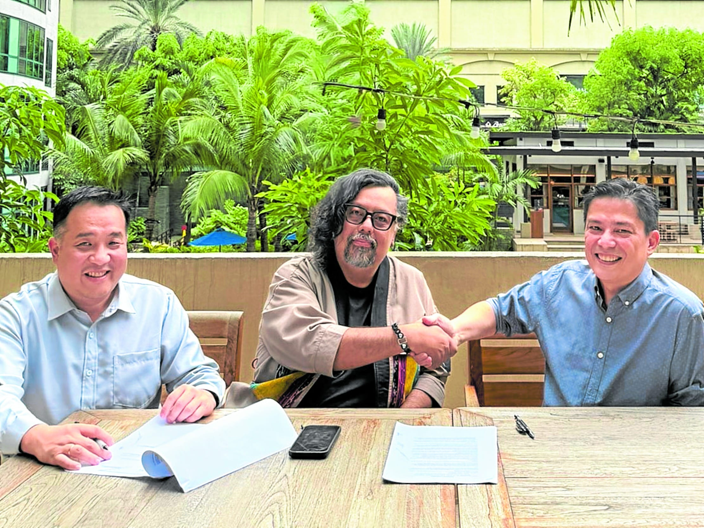
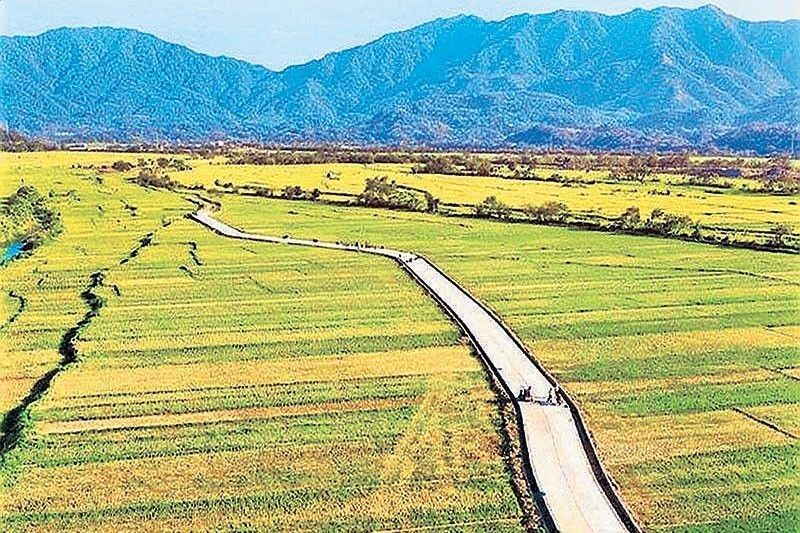
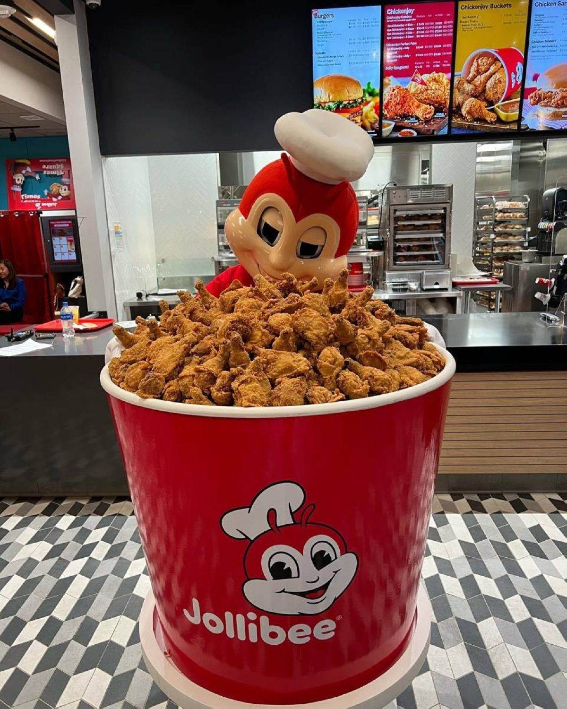

Tape
Philippine Seven still aims for 5,000 7-Elevens by yearend (4,650 end-June; ~200 of 500 planned opens done; card rails in 98% of stores). KairoTech + Packworks launch a Sari-Sari Retail Media Network on Packworks’ 379k digitized stores — brand money into neighborhood shelves. DA wants P125B a year for farm-to-market roads (got P16B next year, down from P33B). JFC director Poe Eng sold ~P197M since June while Tan Caktiong’s Hyper Dynamic bought into the dip; H1 profit −17%, Q2 record.
For Calamba: convenience is still filling gaps and tickets via cashless — watch where the next 300 stores land on SLEX / CALAX catchments. Sari-sari media is an FMCG route-to-market story (and a promo-flavored launch); if it works, impulse and tingi compete harder with your takeaway. Farm roads are a 6–12 year produce-cost lever, not a September invoice. JFC: chairman buying, bayaw selling — ownership noise around the HK spin, not a menu cue.

7-Eleven still targets 5,000 by yearend
4 Sep 2026
Philippine Seven Corp. chairman Jose Victor P. Paterno: still upbeat on hitting 5,000 7-Eleven stores by yearend despite “external headwinds.” Ended June at 4,650. Plan was 500 new stores in 2026 — about 200 opened so far — and more than 500 eyed for 2027. Card terminals are the quiet win: “We’ve done actually pretty well despite everything, but a lot of that is because we rolled out the payment terminals.” About 98% of stores take cashless; digital is 12% of sales (per president Richard Lee). Better unit economics even as labor and utilities eat the gain; tourist and affluent sites feel the card lift most. H1 net profit P1.84B (+3.8%), same-store sales +5.9%; Paterno expects H2 SSS percent growth to outperform H1. Shares closed P32.70 (−0.91%). Operator read: the model still prints on density + rails. If you’re opening near a 7-Eleven cluster, assume they keep coming — and that cashless tickets are the new floor, not a perk.
Open BusinessWorld

Sari-sari gets a retail media network
4 Sep 2026
FLAG — partnership / launch copy. KairoTech (Ed Sunico) and Packworks (Bing Tan, Ibba Rasul Bernardo, Hubert Yap) are building what they call the country’s first Sari-Sari Retail Media Network: Packworks’ 379,000 digitized micro-retailers plus Kairo’s behavior-led audience and programmatic stack. PH has ~1.3M sari-sari; Packworks says 75% of its owners are women. Pitch: brands see neighborhood demand and promo ROI closer to the suki counter; stores get smarter stocking, faster turns, better buying economics. Sunico: retail media should “connect brand investment to real economic activity in communities.” This is not a supermarket wall or an e-com homepage — it’s tingi as inventory + media. For a restaurant opener: treat it as FMCG channel heat in the same barangay as your takeaway. If brands fund demand at the sari-sari, impulse snacks and drinks get louder there first.
Open Philstar

DA wants P125B a year for farm roads
4 Sep 2026
Agriculture Secretary Francisco Tiu Laurel Jr. is asking for up to P125 billion a year for six years — about P750B — to build roughly 55,000 km of farm-to-market roads. “If we want to finish it in six years, that’s P125 billion a year. But of course, we are limited by the fiscal space.” Next year’s FMR allocation: P16B, down 51% from P33B in the 2026 plan. Realistic path he floated: P60–66B a year to close the gap in ~12 years. This year: 2,300 km across 1,605 projects; DBM SARO only last week; bidding this month, construction from December, finishes into end-2027. FMR moved from DPWH to DA, which stalled bids. Kitchen read: this is logistics, not a rice headline. Better farm roads cut spoilage and truck time for produce — but your plate cost waits on asphalt and bicam, not the press conference.
Open Philstar

JFC: bayaw sells, chairman buys
3 Sep 2026
Bilyonaryo tallied SEC filings: JFC director Antonio Chua Poe Eng (Tony Tan Caktiong’s bayaw) sold 1.37M shares worth about P196.7M from June 24 to Aug 24 — ~P54M in June, P90.2M in July, P52.2M in August via Honeyworth. Beneficial holdings fell from 22.54M to 22.19M by Aug 24. Same stretch: Hyper Dynamic (Tan Caktiong) bought another 1.78M shares in August to 494.51M, or 44.13% of JFC — sometimes on the same days Poe Eng sold. Backdrop: H1 net income −17% to P4.93B on +10% revenue to P163.62B; Q2 attributable profit a record P3.39B (+5.7%) as price increases offset commodity, logistics, and supply-chain costs. Operator read: ownership is splitting around the international spin (HKEX path already public). Menu and franchise pace still follow traffic and protein cost — not who is unloading on the PSE.
Open Bilyonaryo